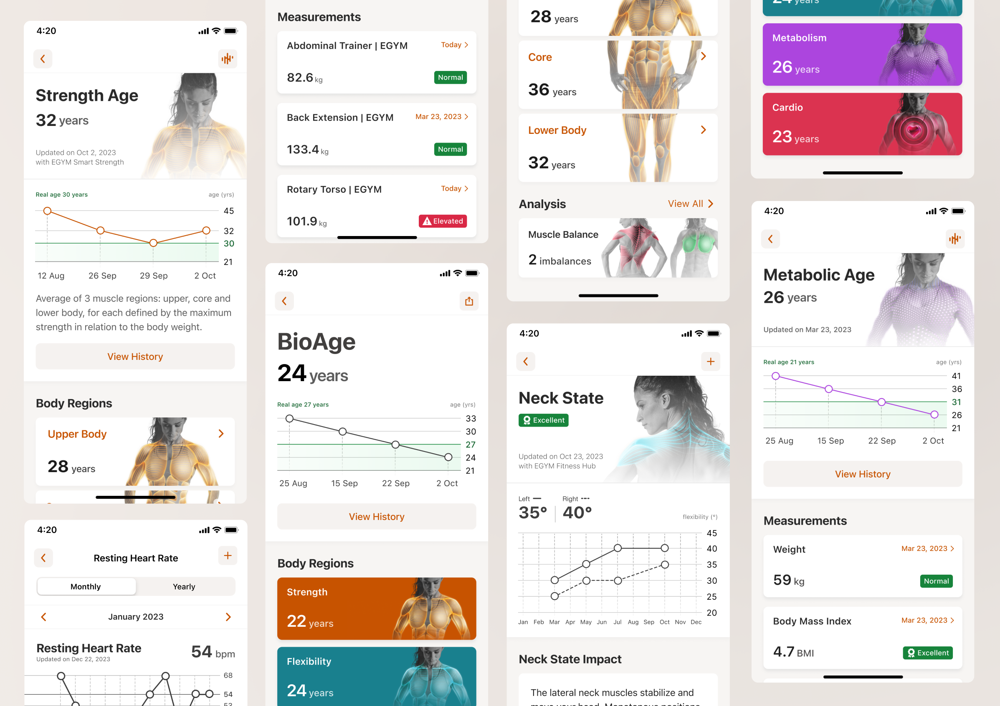
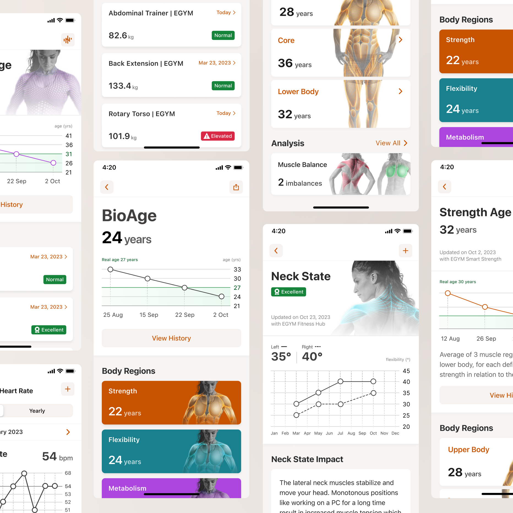
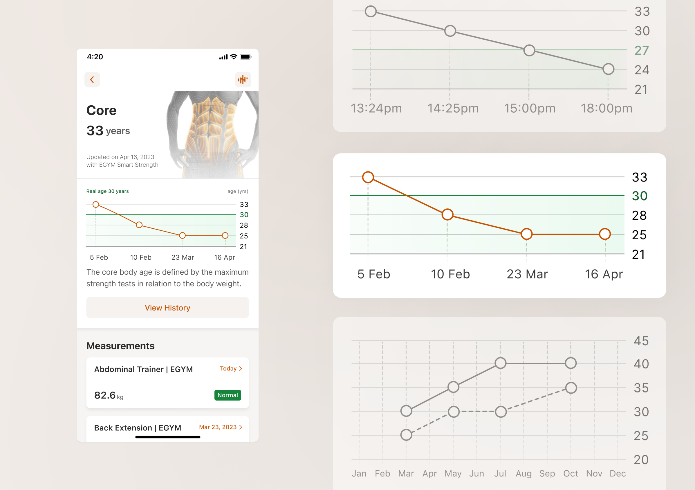
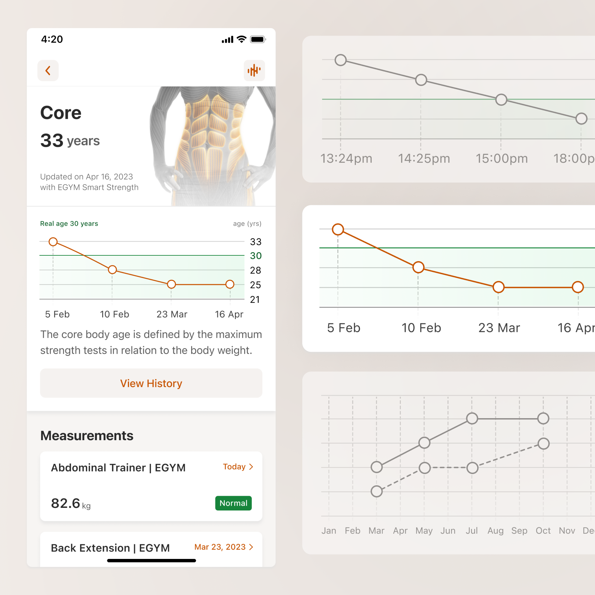
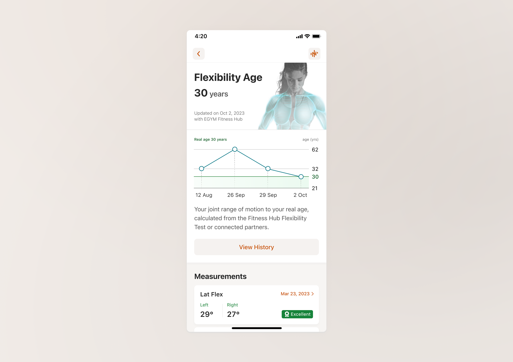
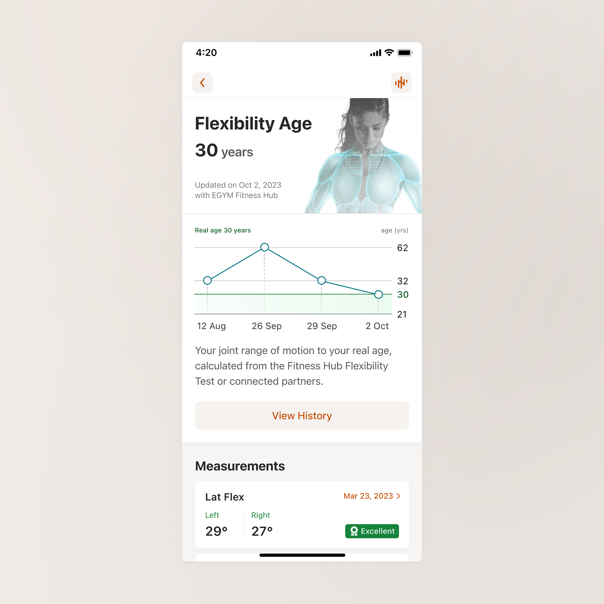
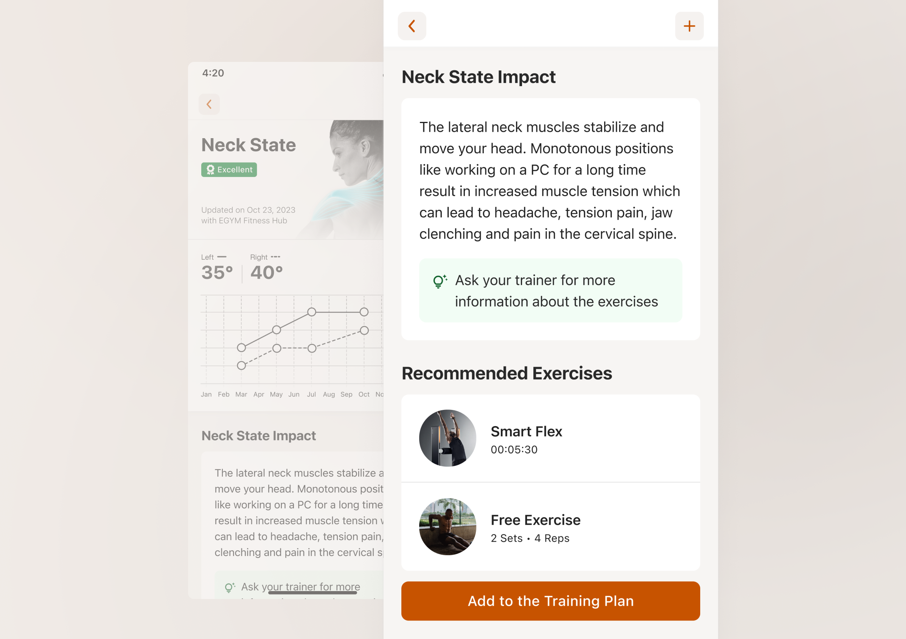
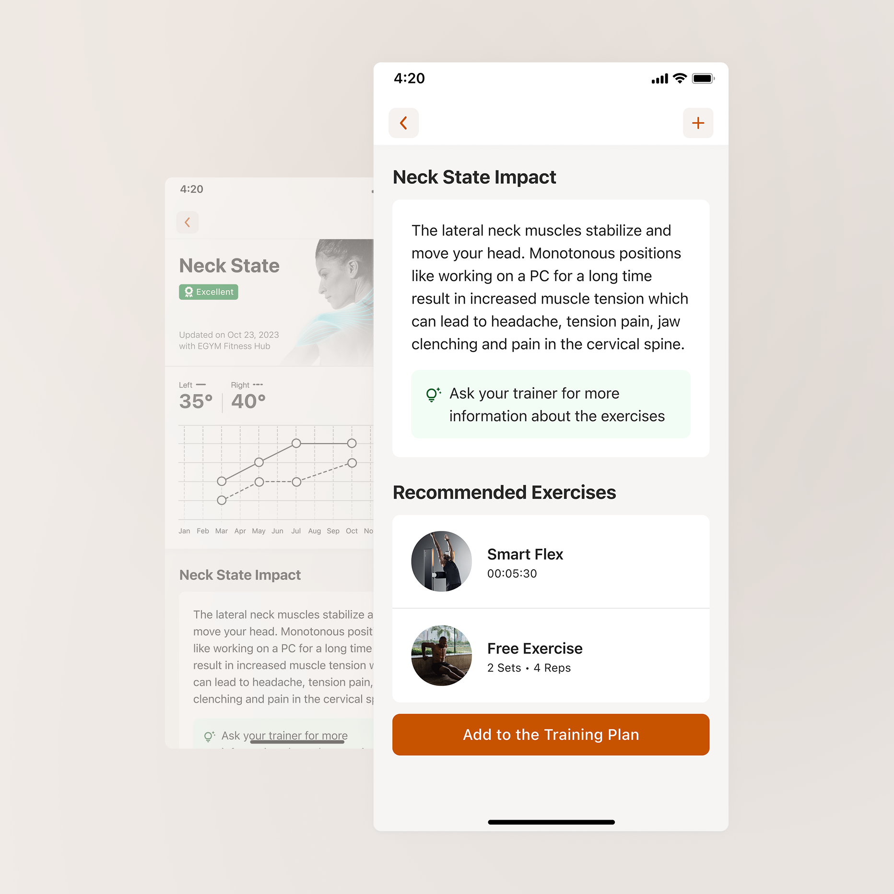

Product case study
Bring your users value instead of numbers when visualising data
Redesign of the BioAge feature, an indicator made to communicate wellness status at scale. Transformation of a wide range of user measurements into dynamic charts with clear insights indicating the impact of exercise on their health.
December 2023 · 4 min read
This case is associated with my past experience at EGYM, their current business proposition is best reflected on their website. All rights are reserved by their respective owners.
This case is associated with my past experience at EGYM, their current business proposition is best reflected on their website. All rights are reserved by their respective owners.
Background
Numbers alone rarely answer the questions people actually have. Yet many products continue to treat data as the destination rather than the starting point.
By curating well-sourced content and making it available in multiple languages, the website aimed to shift perceptions among key international audiences, and ultimately spark off greater support for Ukraine.
The BioAge feature redesign for EGYM members’ app unravelled a simple principle: let’s not assume your users just want more health data! They don't. People want reassurance, progress, motivation, answers. Data is only valuable when it helps deliver at least one of those things.


Problem
That’s why the real product design challenge wasn't how to present the numbers, but how to help users understand why it matters, what it says about their health today and what they can do about it tomorrow.
From a sport science perspective, BioAge was a comprehensive indicator derived from a wide range of user measurements relative to physical age. But once we assessed the status quo, it turned out that for users this metric raised more ambiguity than it resolved: “It's a little bit like I just have to accept whatever it tells me… It would be nice to see the key, how it is put together, how you get to this calculation”
As the design owner of this project, I faced one key question: If we removed the number entirely, what value would users actually lose?
Sharing 3 tips from this experience:
Recognise where precision becomes misleading rather than helpful
From preliminary research, we knew that the average user wants to see the last 4 results. But what would that mean at practice? Members display diverse behaviors when it comes to their gym experience, ranging from hourly measurements updates to tuning in for a bigger assessment once a quarter. We found something that they had in common: a need for a complete progress picture to make better wellness decisions.


Empathise with edge cases when users interpret emotionally
The circumstances and environment your users are in will affect their perceived value of the product (that can be advantageous or disadvantageous depending on the situation). In this case, temporary impairment, distraction, or unavailability of guidance at a given moment might create huge jumps on a chart. And while users can be pretty calm about measurements like the weight they lift, when it comes to age, it is being perceived on a completely different level. That’s why it was important to use Ln Reduction to keep the plot from being overpowered by the larger numbers visually.


Help users turn clarity into action
Experience doesn’t end at explanation, guide your user towards what to do next; help them progress with small steps. Right at the moment when the user understands what is affected and how, BioAge gives structured and target-oriented individual training support.


Outcomes
Closing with feedback from a person who’s been using the redesigned BioAge for over 6 months to monitor PT progress while recovering from surgery: “That my legs are not over a decade older than me gives me hope”.
If data can affect how someone feels about their health or future, then every design decision becomes an act of interpretation, not just representation.